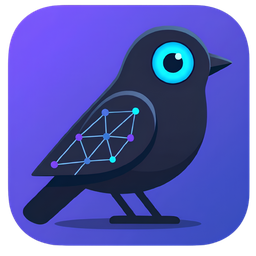

Wide pass on the five questions in the brief. Each frame is drawn against the shipped shell (48px top bar, 48px rail, CaseCard, CaseSubhead, ⌘K) at reduced size; the dashed accent outline marks what is new. Every option keeps the fixed rules: only the Owner invites, every join is approved, the Intel Mac state keeps its existing copy. Nothing here changes the Members screen itself. Pick one or two per question and I take them to the fidelity of Shared Case.dc.html.

BirdbrainTradeoff. Always on screen, in every section, and it occupies the exact slot the sync pill takes after the first join, so the state change reads as the same control changing its label. Cost: the right cluster already holds REC, Connected, capture health, Export, Settings and theme, and has to stay clear of the native window controls; below about 1,020px this pill would have to drop to the icon alone.
Tradeoff. One glyph, no new chrome anywhere else, and it stays put as the Case grows. But the rail is section navigation and Members is a settings screen; icon-only means the word “Share” exists only in the tooltip, which is the thing the first tester never saw.
Wallet-drainer campaign targeting Meridian Trust customers; panel infra on gg-cdn.
Tradeoff. Sits where the Case is described and renamed, next to the only existing “about this Case” metadata, and the button has room for a verb. Overview-only, though: a tester who lands in Captures and stays there never meets it, so it needs 1a, 1b or 1f behind it. After the first join it becomes “Members · 3”.
Share it with up to four teammates who run Birdbrain. You approve every join.
Tradeoff. The only option that explains what sharing is before the person clicks, in the same words as the Members empty state. “Not now” removes it for that Case, so after one dismissal it is gone and something permanent must still exist. Also answers question 4 for the first Case opened, at no extra cost.
Tradeoff. No chrome at all and symmetrical with the join action that already lives here, so the two halves of the flow sit together. Invisible to anyone who has not opened the palette, which the first tester had not. A supplement, not an answer on its own.
Tradeoff. Gives the open Case the action menu the assessment (item 19) noted it lacks, and the item reads as a verb with the Case named right beside it. Changes a shipped behavior: the breadcrumb currently opens the palette on click, so people who learned that lose one click. The menu also becomes the natural home for Rename and Export, which is a larger change than the brief asked for.
Tradeoff. One word everywhere, matching the tab, the route and the tester guide. But “Members” on a Case of one is a roster with nobody in it; it describes the screen, not what the person wants to do, which is the gap the first tester fell into.
Tradeoff. Verb while there is something to do, noun once there is something to see; it is also how the top-bar pill in 1a already behaves. The label changes under the person once, at the moment they will be looking at it anyway. The Intel row keeps the control visible so the existing “not available on this Mac” copy has somewhere to appear.
Tradeoff. Each place uses the grammar its neighbours use (menus are verbs: Rename, Delete; pills are states). Most to explain in a spec, and “Invite a teammate” is deliberately not used anywhere: it names one person, and the Members screen is where the number of them is visible.
Wallet-drainer campaign targeting Meridian Trust customers.
Tradeoff. The hues from the Members handoff do the work, so a shared Case is colourful where a local one is not, and who is in it is readable without opening it. The chips mean nothing until someone has learned Member Codes, and five chips plus “you own” is tight at the card’s width.
Wallet-drainer campaign targeting Meridian Trust customers.
Tradeoff. Keeps the shipped SharedCaseLine and adds one pill where the eye already looks for Case status; a plain Case has an empty slot there, so the difference is immediate. The slot also carries Recording and Active, so when both apply the pills stack or one yields.
Tradeoff. Cheapest change: the line that already exists gets four states instead of one, including the invite-waiting state nothing else shows today and an explicit “on this machine only” on local Cases so the absence is a statement rather than blank. Text-only, so it is the least glanceable of the three; it pairs with 3a or 3b.
Wallet-drainer campaign targeting Meridian Trust customers; panel infra on gg-cdn.
Tradeoff. The Case’s identity row gains one pill in the type pill’s grammar, with the roster inside it; click opens Members. On a local Case the same pill reads “Share” (the 1c button folded into the row). Overview-only again, so it is the in-Case half of a pair with 3e.
Tradeoff. Visible in Captures, Notes, Data, everywhere, and it ties the Member Code on every Exhibit back to the person reading. Small, so it is a confirmation rather than an announcement; a local Case simply has no chip, which is only noticeable once you have seen a shared one.
Up to four people who run Birdbrain, each with a full copy. You approve every join.
Tradeoff. Points at the thing, once, where it lives; the renderer already has data-tour anchors, so this is the existing mechanism with one more stop. It interrupts the first Case open, and it needs a fixed entry point (1a, 1b or 1f) to point at.
Tradeoff. Same shape as the extension banner the dashboard already uses, so it costs nothing new and reaches people before they open anything. Banners are closed without being read, and it tells rather than shows: the person still has to find the control it describes.
Tradeoff. Zero interruption and nothing to build or later remove. It bets everything on question 1; if the entry chosen there is a glyph (1b) or hidden (1e), the second tester can miss it exactly as the first did.
Tradeoff. Smallest change; the count badge already hints there are more. It only closes the gap if ⌘K rows gain a Share/Members action (5c); on its own it leads to a list where the older Case can be opened but still not shared, unless question 1 has put Share inside the Case.
Tradeoff. Every Case gets the same “⋯” menu the cards have, and the Sharing column answers question 3 for Cases that never make the top three. The dashboard grows with the number of Cases, and it is a new component rather than a reuse.
Tradeoff. Closes the older-Case gap for anyone who can type its name, with no dashboard change and the Join action already next door. Hidden behind a modifier; it is the keyboard route, not the discoverable one. Pairs with 5a.
Tradeoff. No new row component, and every card keeps its “⋯” with Share in it. Nine cards of equal weight bury the three recent ones that the limit was protecting, and the dashboard’s guide and activity sections move down with them.
If I had to pick now: 1a as the permanent home with 1e behind it, labelled per 2b; 3b with the role lines from 3c on the card and 3e inside the Case; 4a pointed at the pill; 5b for the dashboard. The pairing that pulls the other way is 1f + 2c, which gives the Case a proper menu at the cost of a behavior change. Try next: “take 1a, 2b, 3b+3c, 3e, 4a, 5b to Members fidelity” · “show 1f with Export folded in” · “show 1a at 1,000px wide”.